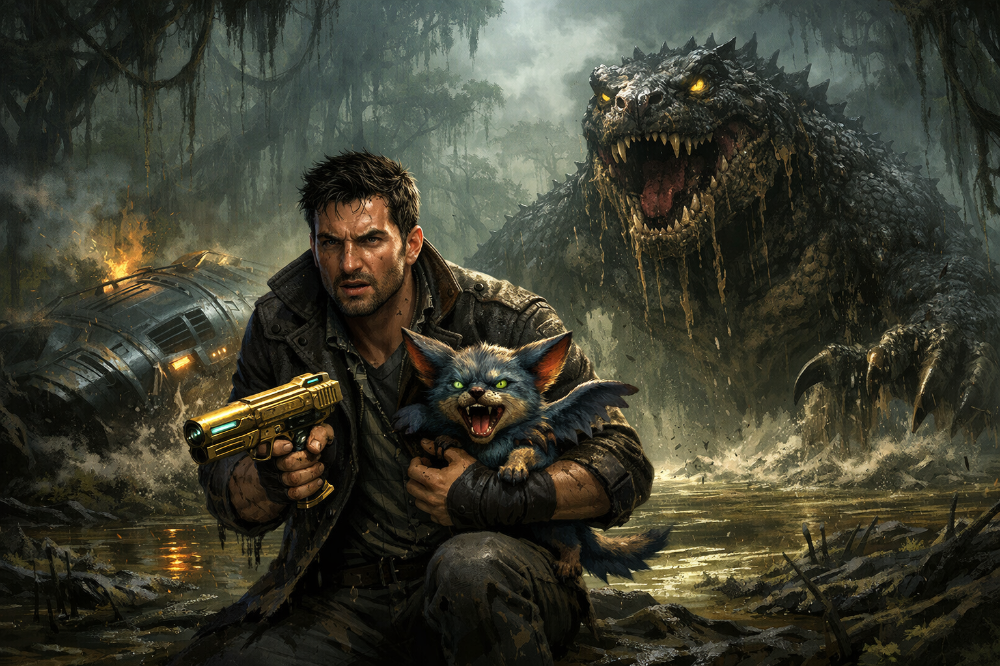

Me llamo Tony. Soy un humano con fuerza sobrenatural e inteligencia suficiente para construir gadgets que me han salvado la vida más de una vez. También tengo el don de comunicarme con razas alienígenas inteligentes, lo cual me ha abierto puertas en los rincones más remotos del universo. Pero nada de eso pudo evitar perder a Elvira. Aquella noche en nuestro planeta, una organización secreta llamada los Sombra había puesto precio a la cabeza de Elvira por saber demasiado sobre sus operaciones en el sistema solar. Yo lo descubrí a tiempo, pero la única forma de salvarla era hacerle creer a los Sombra que ya no éramos nada. Tuve que actuar como si no me importara, decirle cosas que nunca quise decir, alejarme de ella de la manera más cruel posible para que los Sombra perdieran el interés. Funcionó. Elvira está viva. Pero ella nunca supo la verdad. Para Elvira, simplemente la abandoné. Me odia, y eso duele más que cualquier herida de batalla.
Salí huyendo en SITA, mi nave de última tecnología con personalidad propia. SITA es sarcástica, sobreprotectora y habla demasiado cuando me ve triste, que últimamente es siempre. Me acompaña también KAWA, mi mascota alienígena que parece un perrito adorable pero puede volar y pelear mejor que cualquier guerrero. Juntos recorremos el universo cazando monstruos y vendiendo sus partes al mejor postor. No es la vida que soñé, pero es la que me quedó. Íbamos rumbo al sistema Draco cuando una lluvia de meteoros nos tomó por sorpresa. SITA gritó advertencias pero era demasiado tarde. Los impactos dañaron los motores y caímos en espiral hacia un planeta que no figuraba en ningún mapa. Era lúgubre, cubierto de vegetación verde y densa, con un aire pesado y húmedo que olía a tierra podrida y a abandono. Aterrizamos de golpe en un lago pantanoso y oscuro. SITA comenzó a hundirse lentamente en el fango mientras sus sistemas parpadeaban y su voz se cortaba intermitentemente. Tomé a KAWA en brazos y salté fuera de la nave justo antes de que el fango la cubriera por completo. El planeta era silencioso de una manera que incomodaba. Entonces el suelo tembló. Un rugido ensordecedor rasgó el aire y del pantano emergió una criatura enorme, parecida a un dinosaurio, con escamas oscuras cubiertas de lodo y ojos amarillos llenos de furia. Nos miró directamente. Este era su hogar. Y nosotros acabábamos de destruirlo. KAWA gruñó y se puso en posición de ataque. Yo metí la mano en mi chaqueta y sentí el frío metal de mi Golden Gun. Pensé en Elvira. Siempre pienso en Elvira. Y sentí una mezcla de tristeza y rabia que no sabía muy bien hacia dónde dirigir.
¿Qué decides?
Opción A: Sacar la Golden Gun y eliminar a la criatura